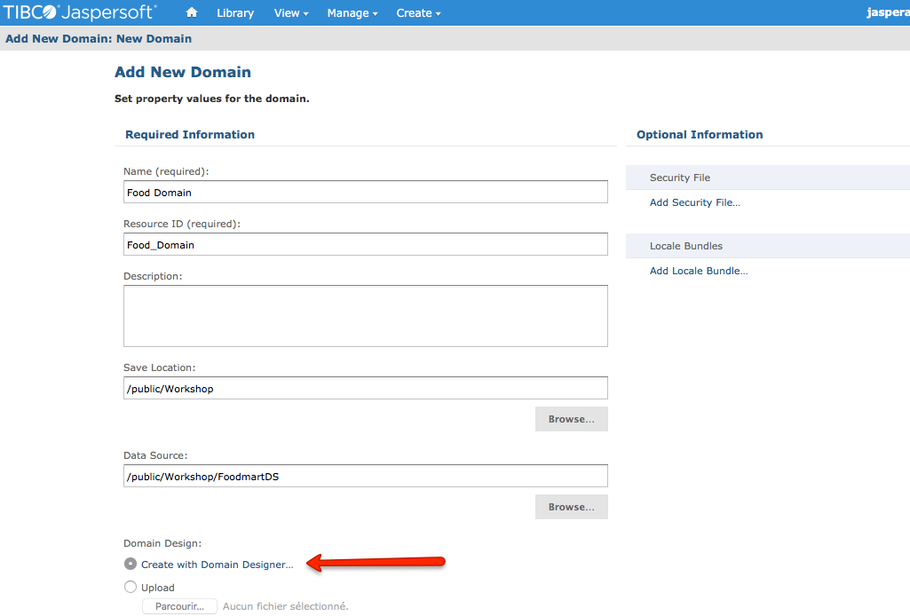
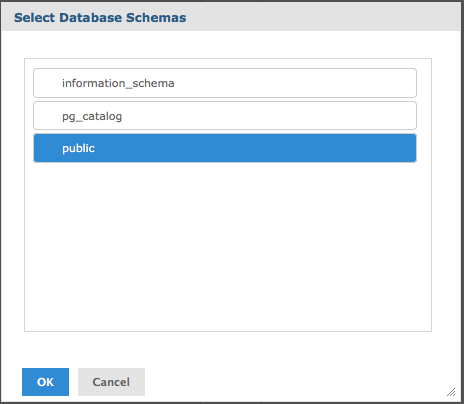
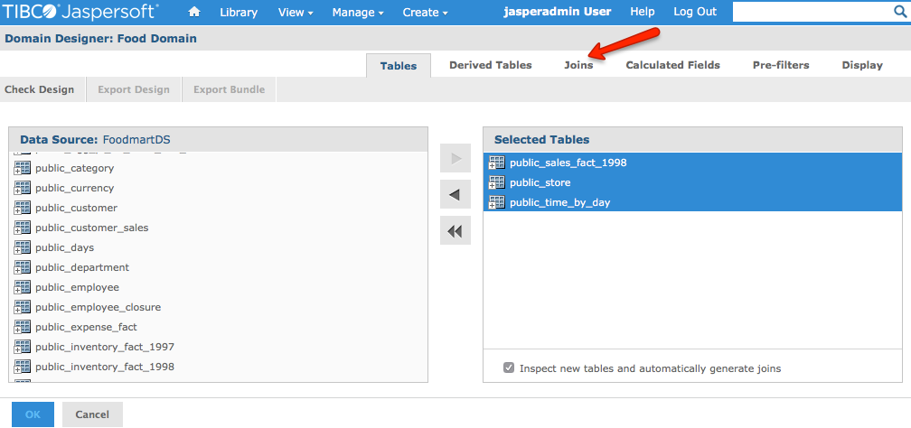
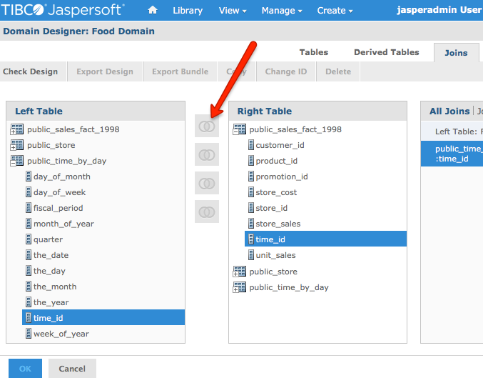
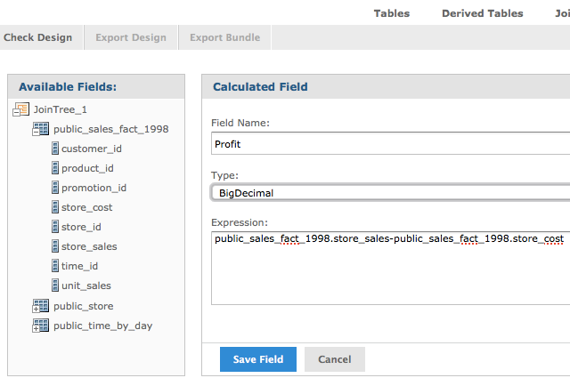
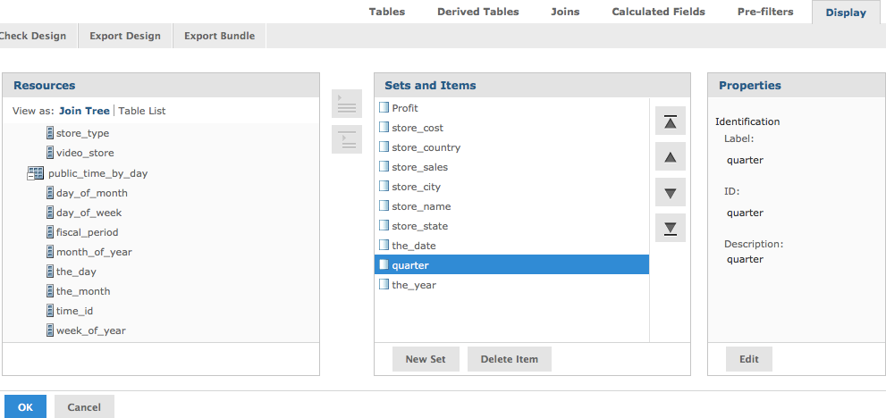
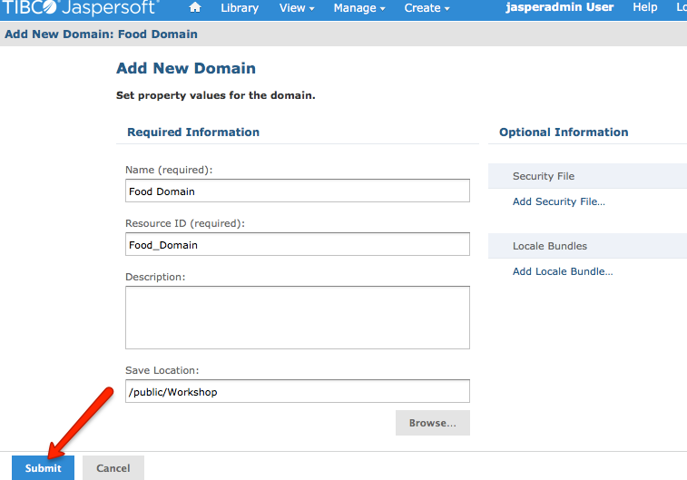

LAB 2 - Create a Domain
We want a domain showing sales, cost and profits measures for low fat products and stores. To do so we will select and join some tables from our data source, create calculations and create a presentation for our users.
Task 1 - Create the domain object
Go to menu [Create -> Domain]
This will describe the domain object and specify what database to be used for the domain.
This screen has other options we won’t cover for now.
- Name: Food Domain
- Resource ID is populated automatically. Don’t change anything here.
- Save Location: Click browse then select the /Public/Workshop folder
- Datasource: Click browse then select the /Public/Workshop/FoodmartDS datasource
Click on the link
"Create with domain designer" (hover to find) to continue
Task 2 - Describe the domain
Select Schema
As Postgres supports multiple schemas, you will be prompted once you start describing your domain
Select
public then click
OK as this Public schema (
hover to view) contain the tables we need for our domain
Select Tables
We are now prompted with all tables on our database. Only a few are needed for our domain
Double Click on the table
public_sales_fact_1998 on the left panel
The table appear in the right panel “Selected Tables"
Repeat the same step for
public_store and
public_time_by_day
Configure Joins
Click on
Joins (
locate the link) to continue
Open the
public time_by_day table in the left table panel, then select
time_id
Open the
public_sales_fact_1998 in the right table panel, then select
time_id
Click on inner join icon (
locate the link)
Open the
public_store table in the left table panel, then select
store_id
On the
public_sales_fact_1998 in the right table panel, select
store_id
Click on inner join icon (in middle)
Add a Calculated Field
We want to add a calculated field to our domain
Click on
Calculated Field tab
- Field name: Profit
- Type: Big Decimal
- Expression: public_sales_fact_1998.store_sales-public_sales_fact_1998.store_cost
To help you in your expression, you can open the join tree and double click in a field name
This will place the field name in the expression
Click
save field to add it to the domain (
hover here)
Configure Display
Click on the
display tab
The display section will determine what field will be displayed to our users
Here we will select some fields only
From the
join_tree_1 open the table
public_sales_fact_1998
Double click on the following fields:
[Profit], [Store_Sales], [Store_Cost] to select them
From the table
public_store take the following fields:
[Store_Name], [Store_City], [Store_State], [Store_Country]
From the table
public_time_by_day take the following fields:
[The_Date], [The_Year], [The_Quarter]
(Hover here to see the result)
Click
OK to save your design
You are now redirected to the domain object page
Click on
Submit (view) to validate and save your domain.
 (Hover here to see the configuration of the view)
(Hover here to see the configuration of the view)